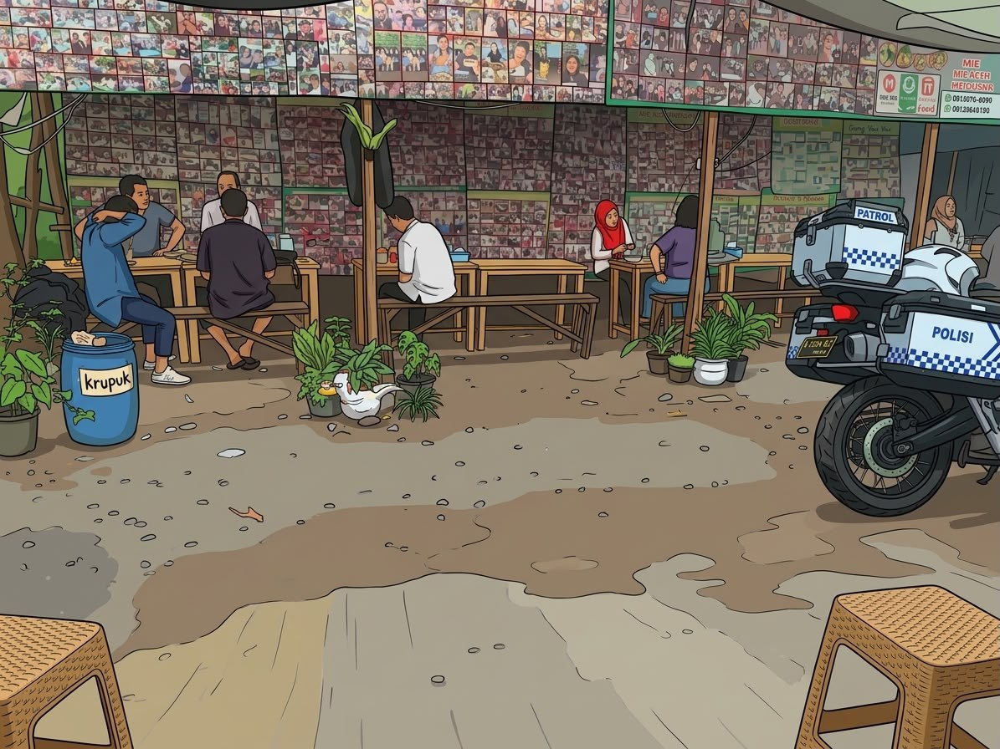

Cita rasa khas Betawi
Hangat, gurih,
Hangat, gurih,
bikin kangen.
Uli bakar dengan taburan serundeng yang gurih, dibuat untuk menemani waktu santai kamu.
Dibuat segar saat dipesan
RASA
TRADISIONAL
♡
TRADISIONAL
♡
✳ ✳ ✳ ✳ ✳
ULI BAKAR
+ SERUNDENG
+ SERUNDENG
BETAWI
ASLI
ASLI

Dari tradisi, untuk semua generasi.Cerita kami
Sederhana, tapi penuh rasa.
Uli bakar tabur serundeng Bang Par Par membawa camilan tradisional ke momen sehari-hari. Uli dibakar hingga harum, lalu disajikan dengan serundeng gurih yang menggugah selera.
⌖ Bambu Apus, Jakarta Timur
Yuk, pesan sekarang ↗Gampang dan praktis
Pesan pun mudah
Masukkan jumlah menu ke keranjang, isi data singkat, lalu lanjutkan pesanan melalui WhatsApp.
WhatsApp akan terbuka dengan pesan pesanan yang sudah disiapkan. Tekan Kirim di WhatsApp untuk mengirimnya.